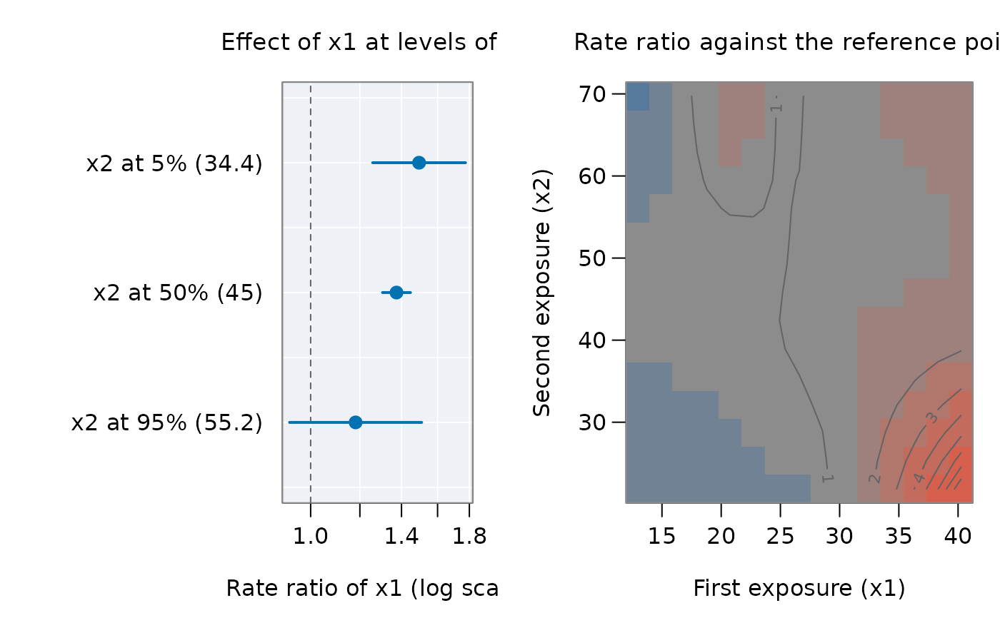

Two exposures together: their interaction and the surface of effects
Source:R/apx2.R, R/apxplt.R
jntx.RdEstimates how two exposures (heat and ozone, smoke and heat) act together on a count, as a surface of rate ratios over both, the effect of one at chosen levels of the other, and a test of the interaction.
Arguments
- data
A data frame.
- y
The name of the count column.
- x1, x2
The names of the two exposures.
- form
"spline"or"linear".- k1, k2
The knots of the spline bases (3 to 7).
- p1
The two quantiles of
x1compared (cond).- p2
The quantiles of
x2at which they are compared.- ref
NULL(the medians) or the reference point of the surface.- ngrid
The points of the surface along each exposure, at most 8192 (
ngridtimesngridat most 2^26).- ctrl
NULLor the names of other regressors.- est
The estimator,
ppmlfe()by default.- ...
The other arguments of
est(fe,clus,se, ...). Forplot(), passed to the base-graphics call.- x
An object of class
jntx.- main, col, pal
The title, colour and palette, as in plotm;
palshades the surface (by default"diverging").
Value
A list of class jntx: cond, the log rate ratio (and rr)
of x1 at p1[2] against p1[1] at each quantile of x2, with
se, lo, hi; surf, the grid (x1, x2, est, se, rr)
relative to ref; test, the Wald test that every interaction term
is 0; fit.
Details
Heo, Berman and Bell (2026, p. 3) fit, for each city, a quasi-Poisson
model with a tensor-product smooth of the two-day moving averages
(lag01) of temperature and ozone, basis dimensions four and three, and
report the heat effect (the 90th against the 10th percentile of
temperature) at low, middle and high ozone (the 5th, 50th and 95th
percentiles), pooled over cities by a meta-analysis. The choices here:
form = "spline" (the default) uses the tensor product of two
restricted cubic spline bases (Harrell), k1 and k2 knots at fixed
quantiles (5 and 4 give the paper's dimensions four and three), without
the penalty of the paper's smooth, so the fit is that of a fixed basis,
not of 'mgcv'; form = "linear" uses x1, x2 and x1 x2, the
common product-term model. The meta-analysis across cities is not
done here: fit each city and pool the cond rows. Berman et al. (2019)
estimate the risk of violent and property crime from daily PM2.5, ozone
and temperature in some 300 US counties with "a two-stage hierarchical
time series model", the counties' series pooled in the second stage,
the same pattern. Use ccross()'s
ma for the lag01 averages, and the fixed effects of ppmlfe() for
the paper's spline of calendar time and day of week (or give them in
...).
plot() draws the rate ratio of x1 (p1[2] against
p1[1]) at each quantile of x2 with its interval on a log scale,
and the surface of rate ratios against the reference point; it
returns a list of what it drew (cond, surf).
References
Heo, S., Berman, J. D. and Bell, M. L. (2026). Multi-city study of the joint effects of ozone and temperature exposure on violent crime during warm months in the United States. Environmental Research, 310, 125969. doi:10.1016/j.envres.2026.125969
Berman, J., Burkhardt, J., Bayham, J., Carter, E. and Wilson, A. (2019). Acute air pollution exposure, temperature, and the risk of violent behavior in the United States. Conference abstract, Environmental Epidemiology (ISEE 2019 abstracts).
Harrell, F. E. (2015). Regression Modeling Strategies, 2nd ed. Springer. doi:10.1007/978-3-319-19425-7
Examples
set.seed(10)
d <- expand.grid(day = 1:150, city = 1:10)
d$temp <- rnorm(nrow(d), 25, 4)
d$o3 <- 0.6 * d$temp + rnorm(nrow(d), 30, 6)
d$crimes <- rpois(
nrow(d),
exp(1 + 0.02 * d$temp + 0.001 * d$temp * d$o3 / 10)
)
j <- jntx(d, "crimes", "temp", "o3", fe = "city")
#> Warning: jntx: the joint test of 12 restrictions is not computed: the covariance has rank 9 (too few clusters for it).
j
#> jntx: the effect of x1 (spline surface) at levels of x2
#> x2 p2 est se lo hi rr
#> 34.36 0.05 0.4016 0.08776 0.22956 0.5736 1.494
#> 45.04 0.50 0.3180 0.02645 0.26611 0.3698 1.374
#> 55.19 0.95 0.1665 0.12481 -0.07812 0.4111 1.181
#> Wald test of no interaction: NA on 12 df, p = NA
plot(j)
